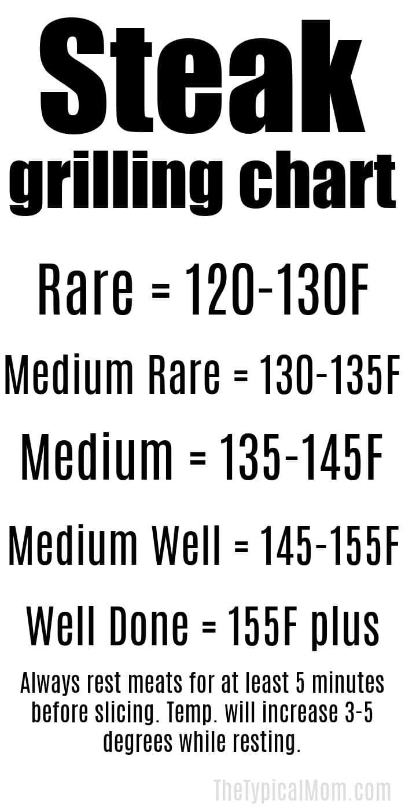

Garlic Butter Steak
 Description
Description
This Pan-Seared Steak has a garlic rosemary-infused butter that makes it taste steakhouse quality. You\'ll be impressed at how easy it is to make the perfect steak - seared and caramelized on the outside, and so juicy inside.
Ingredients
- New York Steak
- Garlic
- Butter
- Salt
- Pepper
Steps
- Pat dry - use paper towels to pat the steaks dry to get a perfect sear and reduce oil splatter.
- Season generously - just before cooking steaks, sprinkle both sides liberally with salt and pepper.
- Preheat the pan on medium and brush with oil. Using just 1/2 Tbsp oil reduces splatter.
- Sear steaks - add steaks and sear each side 3-4 minutes until a brown crust has formed then use tongs to turn steaks on their sides and sear edges (1 min per edge).
- Add butter and aromatics - melt in butter with quartered garlic cloves and rosemary sprigs. Tilt pan to spoon garlic butter over steaks and cook to your desired doneness
- Remove steak and rest 10 minutes before slicing against the grain.
Steak Temperature Chart
